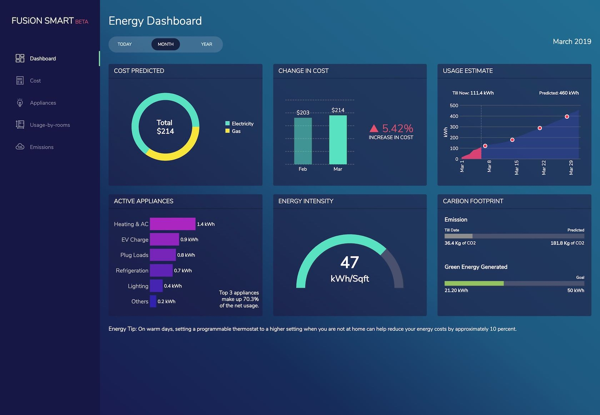
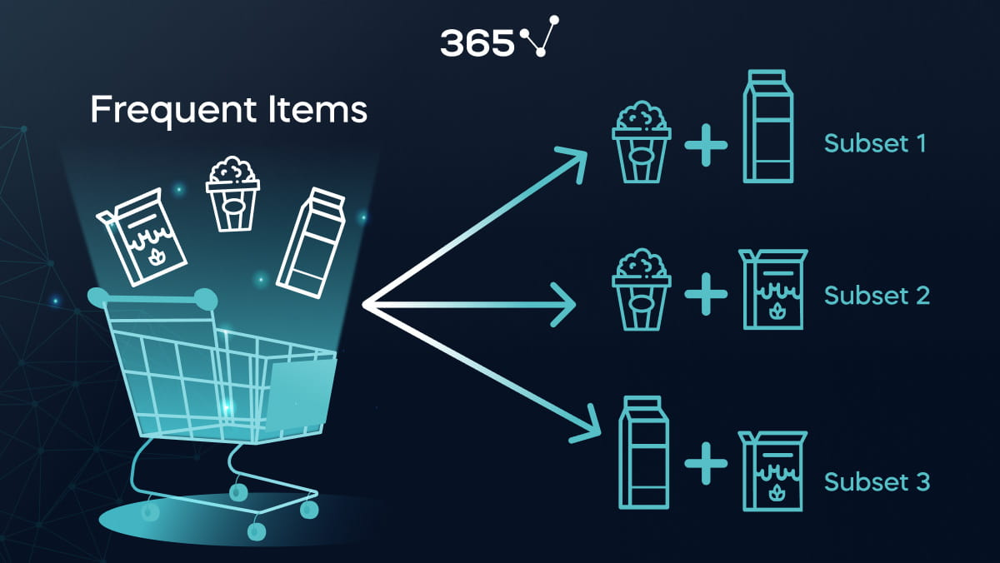

Projects
Here are some of my notable projects:
Neural Network Ahoy: Cutting Edge Ship Classification for Maritime Mastery
This project was part of my externship with SmartInternz and Google Developers. The goal was to develop a neural network model to classify different types of ships for maritime applications.
Technologies used: Python, TensorFlow, Keras, OpenCV
Data Visualization Dashboard
Created an interactive data visualization dashboard using Tableau to showcase sales performance metrics for a retail company. The dashboard includes key performance indicators (KPIs), trends, and insights to help the management team make informed decisions.
Technologies used: Tableau, SQL

Customer Churn Prediction
Developed a machine learning model to predict customer churn for a telecommunications company. The project involved data cleaning, feature engineering, model training, and evaluation.
Technologies used: Python, Scikit-learn, Pandas

Market Basket Analysis
Conducted a market basket analysis to identify frequently purchased item sets in a retail store. The results were used to optimize product placement and marketing strategies.
Technologies used: Python, Apriori algorithm, Pandas
